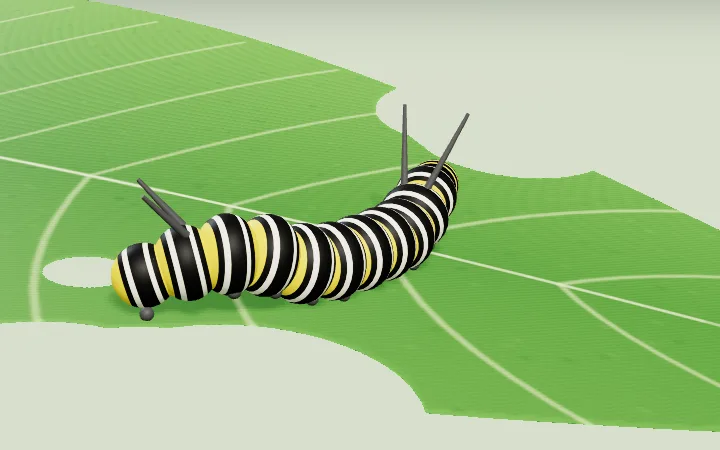

Animaciones 3D que podés mover con el dedo o el ratón: un ser vivo, su ciclo completo y qué pasa en cada etapa. Con los tamaños a escala real y las duraciones medidas, no inventadas.

Danaus plexippus
Del huevo al adulto sobre el algodoncillo: unos 30 días de metamorfosis a 25 °C.
Ciclo de unos 30 días Ver la animaciónEsta colección va a crecer. Cada especie nueva se suma como una animación más, sin tocar las demás.